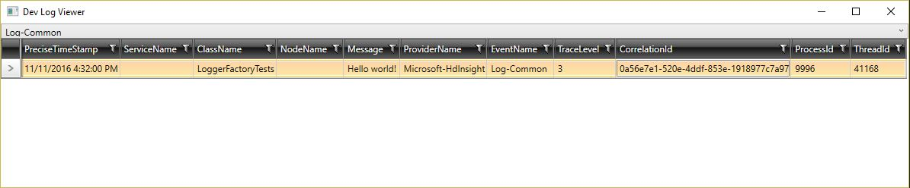

Introduction
Microsoft.Services.Logging library can be used for emitting traces/logs on any system that supports self-describing Event Tracing for Windows(ETW). This document uses ETW terminology extensively, so it is advisable to learn the basics of ETW. It also helps with understanding the flow of logs end-to-end. This MSDN page should get you started.
Installation
This logging library is available as a nuget package. To install it, run the following command in the NuGet Package Manager Console.
PM>
Install-Package Microsoft.Services.Logging -Source
"https://msdata.pkgs.visualstudio.com/_packaging/SQLMDW_HDInsight_Services/nuget/v3/index.json"
Or run the following in a Windows command prompt.
C:\>
nuget.exe install Microsoft.Services.Logging -Source
"https://msdata.pkgs.visualstudio.com/_packaging/SQLMDW_HDInsight_Services/nuget/v3/index.json"
Producing logs
To emit logs from your service, you need to first define your logging events through logging interfaces. A logging interface is an interface with special attributes and each of it's methods defines a new logging event type. Consider the following logging interface as an example.
[EtwEventSource("Microsoft-HdInsight")]
[EtwEventNameSuffix("-Common")]
[EtwEventValueProvider(typeof(TraceLoggerValueProvider))]
public interface ITraceLogger
{
[EtwEventNamePrefix("Log")]
void TraceLog(LogMessage message);
}
[EventData]
public class TraceLoggerValueProvider : CallContextLoggingValueProviderBase<TraceLoggerValueProvider>
{
public string CorrelationId { get; set; }
public TraceLoggerValueProvider() {}
public static TraceLoggerValueProvider Create(string correlationId)
{
return Current = new TraceLoggerValueProvider {CorrelationId = correlationId};
}
}
[EventData]
public class LogMessage
{
public string Message { get; set; }
public TraceLevel TraceLevel { get; set; }
}
...
using (TraceLoggerValueProvider.Create(Guid.NewGuid().ToString()))
{
var logMessage = new LogMessage
{
Message = "Hello world!",
TraceLevel = TraceLevel.Info
};
var logger = LoggerFactory.CreateLogger<ITraceLogger>();
logger.TraceLog(logMessage);
}
ITraceLogger logging interface defines an event called Log-Common using the method TraceLog.
Let's explore each of the artifacts in the above code in detail.
EtwEventSource attribute: This is the ETW provider(or Event Source) name. In simple terms, an ETW provider is an application that is instrumented to emit logs to ETW. A provider is uniquely identified by it's GUID. Provider name set using this attribute is internally converted to a GUID using an hash algorithm to form a unique identifier. This attribute must be set on all the logging interfaces and provider name cannot be null or empty. All the logs emitted using a logging interface will be written to ETW with the provider name set on the interface. It is recommended to use the same provider name for all the logging interfaces in a component or a service.
EtwEventNamePrefix attribute: Event name uniquely identifies a logging event type within an Event Source. The string specified with this attribute forms the prefix of the event name. This attribute must be specified for all the methods(logging events) defined in an interface and prefix cannot be null or empty.
EtwEventNameSuffix attribute: The string specified with this attribute forms the suffix of the event name. This suffix will be appended to the prefix attributed with each method in an interface to form the event name for the corresponding logging event. The suffix can be an empty string.
EtwEventValueProvider attribute: Most often, we have a set of metadata values that we want to add to every log emitted in an activity. ValueProvider exactly helps with this(more details about it are provided below). All the public properties in a value provider type specified with this attribute will be automatically added to all the log events defined in a logging interface.
Interface method: Each method in a logging interface defines a new log event type. It must have exactly one parameter and it can be either a simple or complex type. Public properties in the in the method parameter(if it is of complex type, otherwise the parameter itself) and public properties in the value provider object form the fields of the log event.
EventData attribute: All complex method parameter types and value provider types must be attributed with
EventDatawhich is defined in namespaceSystem.Diagnostics.Tracing. This is required for serializing complex objects when writing logs to ETW. Failing to set this will result in an exception. If a method parameter type or value provider type has a public property which is also complex, then the property type must also be attributed withEventData.
Now that the logging events have been defined, we can invoke the logger factory to create a logger which implements this logging interface and call it's methods to emit logs to ETW(as shown in the second code snippet above).
Value provider is first instantiated/initialized by calling the Create method which creates an
instance of it and assigns it to Current static variable defined in the base class(more details
about it in Value Provider section). An instance of the object that is to be logged is created and
LoggerFactory.CreateLogger<>() is invoked to create a logger which implements ITraceLogger.
To write the log to ETW, TraceLog method in the logger instance is called, which logs the fields
in the method parameter and value provider object.
When LoggerFactory.CreateLogger<>() method is invoked, the name of the class from which it is
called is noted down and engraved in the logger retured by it. To all the logs written to ETW using
this logger, a field called Class is added and set to the value engraved in the logger. If the
same logger instance is used in a different class, it would still log the name of the class in which
the logger was created, which is misleading. So you should always create a new logger instance in
every class.
Consuming logs
This library writes logs to ETW using self-describing event format(TraceLogging), so any application capable of reading this type of logs from ETW can consume them.
To quickly test logging for your application, you can use a tool called DevLogViewer which reads
logs from ETW and displays them on a GUI. The tool is located at
\\fsu\shares\hdibuilddrop\Logging\Tools\DevLogViewer\DevLogViewer.exe
Before emitting logging from your app, you need to run this tool which will create an ETW session
and turn on ETW provider Microsoft-HdInsight-Dev. Also, you need to set the flag
LoggerFactory.EmitDeveloperLogs to true in your application so that all the logs are emitted
using this provider name. Enabling developer logs will have a significant impact on performance, so
you should never turn it on in production. Here's a snapshot of the tool:

The tool has a dropdown at the top which shows the list of all event types. You can select one to view logs of that type.
MDS config fragments
Most services on Microsoft Azure use MDS for monitoring, diagnostics and analytics. Monitoring Agent(MA), used for reading and uploading logs emitted by services, has support for reading self describing events from ETW, which means it can be used for consuming logs emitted using this library. However, MA needs to know which ETW providers to read logs from, events emitted by each of these providers and which MDS tables to write logs to. This information is supplied to MA through MDS configuration file.
Instead of you handcrafting this MDS config file, this library will generate sections of the config
file where the above mentioned information has to be provided. When you install this library to your
project using NuGet, it adds a build target called Microsoft.Services.Logging.targets to your
project file. This target contains a task which reflects over your assembly, searches for all the
logging interfaces, validates them and generates MDS config fragments when you build your project.
The generated config will be stored in MdsConfigs folder in the bin drop and the filename is your
assembly name with '.xml' extestion. However, if the file path length of the generated config exceeds
the limit set by the operating system, the filename will be shortened.
The target added to your project leverages the incremental build feature of MsBuild, so the task
which generates the MDS config fragments will not run every time you build your project. It will
only run if there are any changes in your project, thereby not adding to the build time with every
buld. You can also turn off MDS config fragments generation by setting the build property
RunMdsConfigFragmentsGeneration to false.
The generated config will also contain information required to enable DGrep and LogAnalytics for seaching through logs on Geneva and for doing indexed log search using Kusto respectively. As mentioned earlier, MA also needs to know which MDS table to write the logs to for each event type. The build task provides that information by normalizing the event name(removing all characters other than letters or digits from the event name) to form the MDS table name.
It's possible for different ETW providers to define logging events with the same name, in which case the events from these providers end up in the same MDS table. MDS logs the provider name along with other fields so you can filter logs from a particular provider using it's name.
If you have a project with just one logging interface ITraceLogger defined above, the generated
MDS config fragments will be similar to below.
<?xml version="1.0" encoding="utf-8"?>
<MonitoringManagement>
<Events>
<EtwProviders>
<EtwProvider name="Microsoft-HdInsight" format="EventSource" storeType="CentralBond" account="" duration="">
<DefaultEvent eventName="DefaultMicrosoftHdInsightEvents" />
<Event name="Log-Common" eventName="LogCommon" />
</EtwProvider>
</EtwProviders>
</Events>
<EventStreamingAnnotations>
<EventStreamingAnnotation name="LogCommon">
<DGrep><![CDATA[]]></DGrep>
<LogAnalytics>
<Content>LogAnalyticsContent</Content>
</LogAnalytics>
</EventStreamingAnnotation>
</EventStreamingAnnotations>
</MonitoringManagement>
In EtwProviders section, an element is added for ETW provider Microsoft-HdInsight. It has two
child elements: DefaultEvent and Log-Common event. If MA encounters any undefined events from
this provider, they are logged to the MDS table DefaultMicrosoftHdInsightEvents specified in
DefaultEvent element. The other element for Log-Common ETW event has an attribute eventName,
which is the MDS table to which the logs are written to.
Value Provider
Most applications add some metadata to all the log events emitted in an activity to provide context
e.g., Activity Id, Correlation Id or some activity specific information like operation name,
Subscription Id etc., Adding this context to every log event manually will result in a lot of boiler
plate code and, could be missed to add it at all places in the code. This library provides a very
simple solution to overcome these problems.
First, you need to define a value provider which contains all the metadata fields as public properties.
The value provider must have a parameterless constructor and must derive from another class called
CallContextLoggingValueProviderBase defined in this library. For example,
public class TraceLoggerValueProvider : CallContextLoggingValueProviderBase<TraceLoggerValueProvider>
{
public string CorrelationId { get; set; }
public TraceLoggerValueProvider() {}
public static TraceLoggerValueProvider Create(string correlationId)
{
return Current = new TraceLoggerValueProvider {CorrelationId = correlationId};
}
}
Once you define the value provider, you need to let the logging library know that metadata defined
in this value provider must be added to all the log events in a logging interface by passing the
value provider type using EtwEventValueProvider attribute(as described in Producing logs section).
Now, all you have to do is instantiate the value provider and set it as the current logging context
by assigning it to the Current static property(which is defined in the base class) as shown in the
Create method above. You can retrieve the current logging context by calling get on Current
property. If no logging context is currently set, then it will set an uninitialized instance of the
value provider as the current context and returns it.
using (TraceLoggerValueProvider.Create(Guid.NewGuid().ToString()))
{
var logMessage = new LogMessage
{
Message = "Hello world!",
TraceLevel = TraceLevel.Info
};
var logger = LoggerFactory.CreateLogger<ITraceLogger>();
logger.TraceLog(logMessage);
}
In the above code, when logger.TraceLog(logMessage) is called, CorrelationId defined in the
value provider will be added to the log automatically. If it is called when no context is set(outside
of using statement in the above example), uninitialized instance of value provider is logged with
the event. Instead of using using statement as in the above example, you could also call dispose
on value provider instance explicitly to remove it as the context. The below example is semantically
equivalent to the one above.
var valueProvider = TraceLoggerValueProvider.Create(Guid.NewGuid().ToString());
var logMessage = new LogMessage
{
Message = "Hello world!",
TraceLevel = TraceLevel.Info
};
var logger = LoggerFactory.CreateLogger<ITraceLogger>();
logger.TraceLog(logMessage);
valueProvider.Dispose();
When a new value provider instance is set as the current context before disposing the old instance, the new instance is added as a child node to the old instance internally, and the new instance gets logged subsquently with all the events. When you dispose the new instance, the old instance will be set as the current context automatically. It is not necessary to dispose the value provider instances in order. You could dispose the old instance before disposing the new instance. Consider you have set instances A, B, C in order and disposed instance B. Instance C will be the current logging context and if you dispose it, instance A will be set as the current logging context, as B has already been disposed.
var logger = LoggerFactory.CreateLogger<ITraceLogger>();
using(var valueProvider1 = TraceLoggerValueProvider.Create(Guid.NewGuid().ToString()))
{
var logMessageA = new LogMessage{ Message = "A", TraceLevel = TraceLevel.Info };
logger.TraceLog(logMessageA);
using(var valueProvider2 = TraceLoggerValueProvider.Create(Guid.NewGuid().ToString()))
{
var logMessageB = new LogMessage{ Message = "B", TraceLevel = TraceLevel.Info };
logger.TraceLog(logMessageB);
}
var logMessageC = new LogMessage{ Message = "C", TraceLevel = TraceLevel.Info };
logger.TraceLog(logMessageC);
}
In the above example, valueProvider1 is logged with LogMessageA and LogMessageC while
valueProvider2 is logged with LogMessageB.
If a thread has some logging context set and creates a child thread, then the logging context will be passed down to the child thread as well. To better understand it's behavior, go through the following scenarios. All the value provider instances are assumed to be of the same type.
- Thread 1 sets instance A as the context and creates thread 2. Below are the logging contexts of the threads. Thread1: A Thread2: A
- Thread1 sets instance A as the context, then sets instance B as the context without disposing A and creates thread 2. Thread1: B, A Thread2: B, A
- Thread 1 sets instance A as the context and creates thread 2. Thread 2 sets a new instance B as the context. Thread1: A Thread2: B, A
- Thread 1 sets instance A as the context and creates thread 2. After creating the child thread, thread1 disposes instance A. Thread1: Thread2: A
- Thread 1 sets instance A as the context and creates threads 2, 3. Thread 1 sets instance D as the context, thread 2 sets instance B as the context and thread 3 sets instance C as the context. Thread1: D, A Thread1: B, A Thread1: C, A
Logger extensions
You can create extension methods for your logging interfaces to do any custom operations before
emittin logs to ETW like scrubbing PIL info, formatting data, setting trace level etc., In the below
example, two extension methods are created for ITraceLogger, one to emit logs with trace level set
to info and the other with trace level set to error.
public static class TraceLoggerExtensions
{
public static void LogInfo(this ITraceLogger logger, string message)
{
Contract.AssertArgNotNull(logger, nameof(logger));
logger.TraceLog(new LogMessage { Message = message, TraceLevel = TraceLevel.Info });
}
public static void LogError(this ITraceLogger logger, string message)
{
Contract.AssertArgNotNull(logger, nameof(logger));
logger.TraceLog(new LogMessage { Message = message, TraceLevel = TraceLevel.Error });
}
}
public static void Main(string[] args)
{
var logger = LoggerFactory.CreateLogger<ITraceLogger>();
logger.LogInfo("Executing operation");
logger.LogError("Hit an exception");
}
Extending a logging interface
You can extend a logging interface to define additional logging events or to override any of the attributes set on the interface. Let's say you create a new interface which extends a logging interface to define additional events but not to override it's attributes, you still need to set all the attributes on the new interface.
[EtwEventNameSuffix("-RestClient")]
[EtwEventSource("Microsoft-HdInsight")]
[EtwEventValueProvider(typeof(RestValueProvider))]
public interface IRestClientLogger : ITraceLogger
{
[EtwEventNamePrefix("HttpClientRequest")]
void Trace(OutgoingRestRequest request);
[EtwEventNamePrefix("HttpClientResponse")]
void Trace(IncomingRestResponse response);
}
In the above example, IRestClientLogger extends ITraceLogger logging interface and defines two
additional events HttpClientRequest-RestClient, HttpClientRequest-ResponseClient. It also
overrides event name suffix and value provider type.
Override logging interface
Logging library provides a functionality to override a logging interface with another one which
extends it. When LoggerFactory is invoked to create an instance of overridden logging interface,
an instance of the logging interface which overrode it is returned instead. To override an interface,
you need to call LoggerFactory.OverrideInterface() method as shown below.
public static void Main(string[] args)
{
LoggerFactory.OverrideInterface(typeof(ITraceLogger), typeof(IExtendedTraceLogger));
var logger = (IExtendedTraceLogger)LoggerFactory.CreateLogger<ITraceLogger>();
}
[EtwEventSource("Microsoft-HdInsight-RegionalProxy")]
[EtwEventNameSuffix("-Common")]
[EtwEventValueProvider(typeof(TraceLoggerValueProvider))]
public interface IExtendedTraceLogger : ITraceLogger
{
}
This feature is very useful when you want to override any interface attributes without modifying
existing code. Consider your project references an assembly which uses ITraceLogger to emit logs.
ETW provider name for ITraceLogger is set to Microsoft-HdInsight, so the assembly emits all
the logs using this provider name. But, when using this assembly in your project, you want the logs
to be emitted using a different provider name Microsoft-HdInsight-RegionalProxy. To do this,
define a new logging interface which extends ITraceLogger and set the provider name to a desired
one and leave the rest of the attributes unchanged. Invoke LoggerFactory.OverrideInterface()
as shown in the above example and all the logs emitted by this assembly in your project will now be
using the new provider name.
To remove override for a logging interface, call LoggerFactory.RemoveInterfaceOverride() method.
LoggerFactory.RemoveInterfaceOverride(typeof(ITraceLogger));